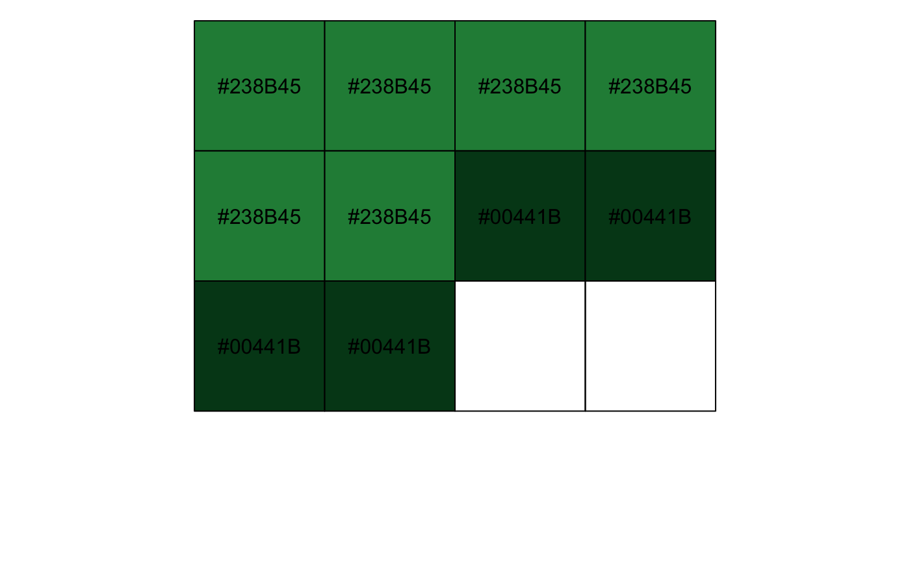
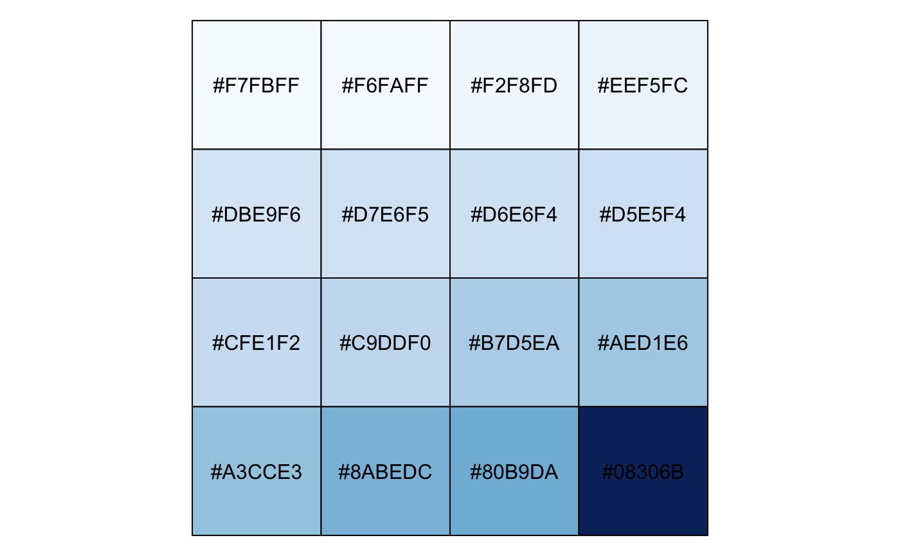
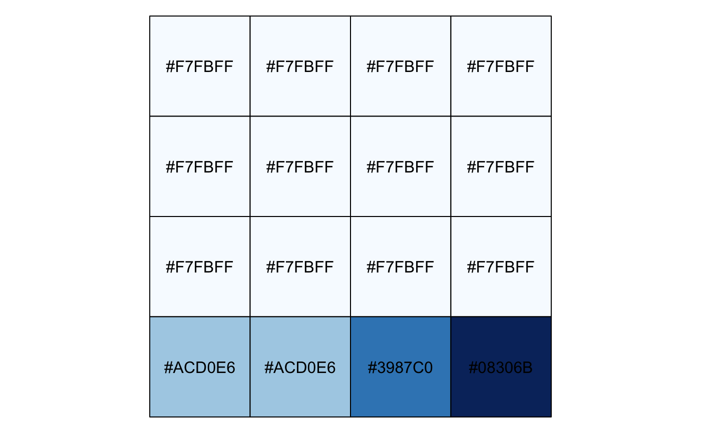
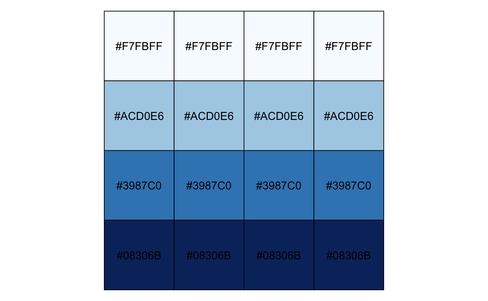
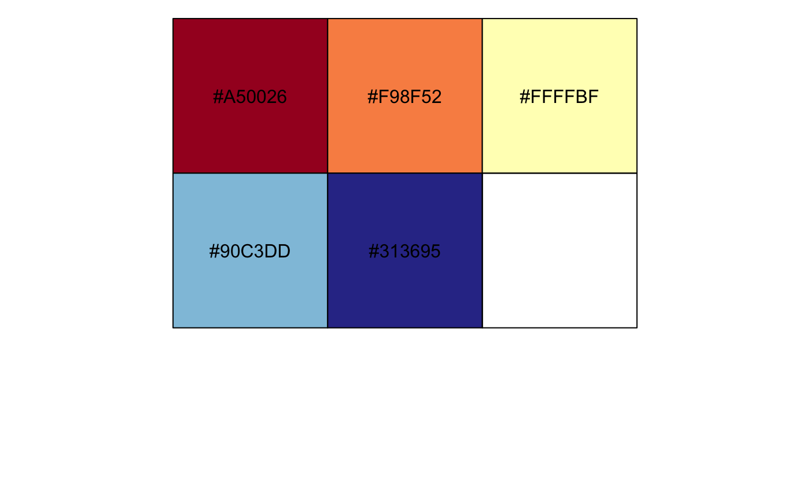
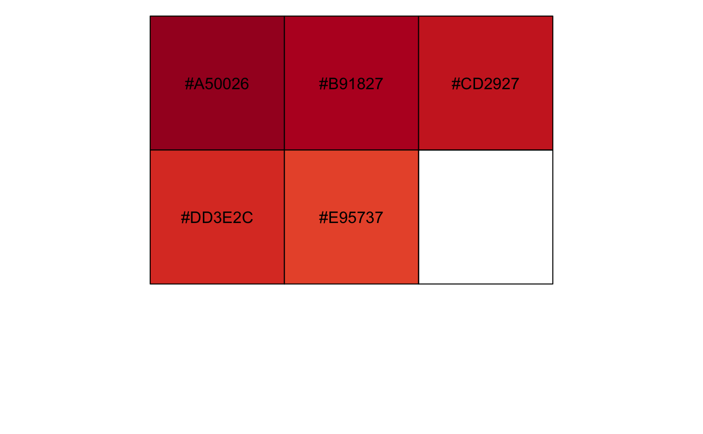

Conveniently maps data values (numeric or factor/character) to colours according to a given palette, which can be provided in a variety of formats.
col_numeric(palette, domain, na.color = "#808080") col_bin(palette, domain, bins = 7, pretty = TRUE, na.color = "#808080") col_quantile(palette, domain, n = 4, probs = seq(0, 1, length.out = n + 1), na.color = "#808080") col_factor(palette, domain, levels = NULL, ordered = FALSE, na.color = "#808080")
| palette | The colours or colour function that values will be mapped to |
|---|---|
| domain | The possible values that can be mapped. For If |
| na.color | The colour to return for |
| bins | Either a numeric vector of two or more unique cut points or a single number (greater than or equal to 2) giving the number of intervals into which the domain values are to be cut. |
| pretty | Whether to use the function |
| n | Number of equal-size quantiles desired. For more precise control,
use the |
| probs | See |
| levels | An alternate way of specifying levels; if specified, domain is ignored |
| ordered | If |
A function that takes a single parameter x; when called with a
vector of numbers (except for col_factor, which expects
factors/characters), #RRGGBB colour strings are returned.
col_numeric is a simple linear mapping from continuous numeric data
to an interpolated palette.
col_bin also maps continuous numeric data, but performs
binning based on value (see the base::cut() function).
col_quantile similarly bins numeric data, but via the
stats::quantile() function.
col_factor maps factors to colours. If the palette is
discrete and has a different number of colours than the number of factors,
interpolation is used.
The palette argument can be any of the following:
A character vector of RGB or named colours. Examples: palette(), c("#000000", "#0000FF", "#FFFFFF"), topo.colors(10)
The name of an RColorBrewer palette, e.g. "BuPu" or "Greens".
A function that receives a single value between 0 and 1 and returns a colour. Examples: colorRamp(c("#000000", "#FFFFFF"), interpolate="spline").
# Exponential distribution, mapped continuously show_col(col_numeric("Blues", domain = NULL)(sort(rexp(16))))# Exponential distribution, mapped by interval show_col(col_bin("Blues", domain = NULL, bins = 4)(sort(rexp(16))))# Exponential distribution, mapped by quantile show_col(col_quantile("Blues", domain = NULL)(sort(rexp(16))))# Categorical data; by default, the values being coloured span the gamut... show_col(col_factor("RdYlBu", domain = NULL)(LETTERS[1:5]))# ...unless the data is a factor, without droplevels... show_col(col_factor("RdYlBu", domain = NULL)(factor(LETTERS[1:5], levels=LETTERS)))# ...or the domain is stated explicitly. show_col(col_factor("RdYlBu", levels = LETTERS)(LETTERS[1:5]))